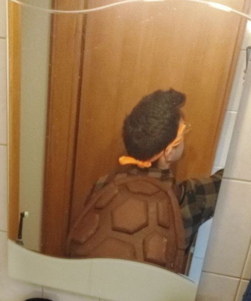

First of all, everyone who has ever watched the Teenage Mutant Ninja Turtles had wished to be one of them.
They're strong, they're brothers, they have so many cool gadgets, they know martial arts. Every kid loved them at a certain point of their life.
However, it's not like I woke up one day with the desire of cosplaying a ninja turtle.
In the summer of 2023 a new animated movie got out and my incredible love for them resurfaced. I was living in Bonn (Germany) at the time, where carnival is a very heart-felt holiday. Specifically the carnival period starts at 11:11 of the 11th of November and ends the day of the Rosenmontag (Rose Monday). Everyone gets dressed up and some people are really cosplaying, investing a lot of time and money in their costumes.
For the previous year I had bought a simple spiderman suit, very nice but honestly very hard to get in and out without the help of a friend (the zip is on the back).
I liked my costume, but I am a good fan of animation, anime, videogames, and until that moment I never really commited to build a costume with my own hands.
I decided that was the time to do it. Mostly because I felt like I didn't need to go "full turtle". With the shell, the weapon and the eye-mask the costume it would have been easy to recognize to everybody.
I immediately looked online to check what was already there.
One thing I noticed is that most of the "ready-to-buy" costumes were really poorly designed.
They were a suit, exactly like my spiderman costume.
But let's be honest, spiderman is human, it's fine to just have the costume.
But the turtles?
Having just a spandex suit on cannot make me look or feel like the turtles.
I needed a real shell. Something 3D, with texture, that could make me feel big.
In the end I found a tutorial for making my own shell. Here is the video that I followed:
I used different types of glues for "all materials", pins to reinforce some connections, a lot of sandpaper and as principal material: EVA foam taupe 620 x 620 x 12mm, 4 tiles, that I bought at Technikplaza.
As I said, I mostly followed the tutorial.
It was not as easy as it looks, especially because the edited video makes it seem like everything works immediately, but that's not true.
The first day I cut out all the parts that I wanted to use and I curved the shell.
Curving the shell was not easy, I started with small cuts and made me progressively bigger to have the desired curvature.
I suggest to make the cuts slanted, because when you will try to glue them together the "back" and "front" part will touch at different times making them not stick properly.
I additionally used a strong tape to keep the shell in shape until the glue was really dry. In the video they use cement glue that should work "instantly", but let's be honest, there is no instant glue, especially if you don't want to spend a lot of money.
You can clearly see the tape in the result of the second day, when I used the sandpaper to get nice borders and then I glued them all onto the shell.
Actually, you can also see I used some extra tools to really press the borders onto the shell so that the glue could stick perfectly.
To be honest, it is very likely that if you use cheap glue you will need all this extra effort, and it may also be that the pieces will need to be re-glued together multiple time.
In the picture you can also see that the glue I used to put together the two halves of the shell is visible. I am not sure if the material was too stiff. However, if you follow these instructions I can assure you that after coloring that was not visible anymore.
It may be worth a try to use a better glue to avoid these problems. I tried at first one "cement glue", but the result was not better.
The third day I sanded all of the patches and I glued them onto the shell. For most of mine I did not require to do additional cuts, only for a couple of them.
The same suggestion still applied, slanted cuts to be sure that when you stick them together you don0t have one face connecting before the other.
Here is where you can really see what I meant with the problem of the cuts. In the left of the image there is an opening where the cuts should be closing.
You can clearly see a lot of glue in there, because I literally drown the hole with it, but it did not get better.
After all I tried to recover from the problem, I can say that if it happens again the best solution coming to my mind is to fill it with any material you can find, in the end you will paint over it and no one will notice.
The second thing you can notice is that I used pins / nails to stick some patches, like the small one in the bottom.
This happened because the patches were very small and the areas were very curved, so the glue was not strong enough to make them stick properly and the sides of the patches were constantly coming unstuck.
This is easy to prevent, but not as easy to cover. The pins and nails are too shiny to really be covered by normal paint. Instead of having to invest in some super expensive painting procedure, I would plan better the patches positions and shapes.
Talking about the safety of using nails and pins, the thickness of the shell is definetly more than enough for the pins and nails, so nothing was sticking out into the shell. As extra safety consideration, the shell is curved so it will touch your back only at the borders.

After that, you just have to committ to paint it. I did not use any shiny and special paint, mostly because carnival in Germany is very "drink-centered" and I didn't feel like investing more in something that could be easily ruined by a beer.
To secure it on me I used an harness, bought on Amazon, that I fixed on the internal part of the shell. It basically become a shoulder strap: easy to get in and easy to get out.
I would recommend it because it's not only easy to wear, but it's also flexible enough to sit comfortable without destroying the shell.
As last point, I think an improvement would be to make the shell base and then use velcro straps for the patches. The patches are not heavy, the velcro straps are more than enough to keep them in place, and it would reduce the amount of glue (which is usually intoxicating) and allow refinements and improvements over time.
Using the velcro rolls, as this one, would let you cut the single pieces of the right dimensions, thus providing good grip and keeping the good aesthetic of the shell.